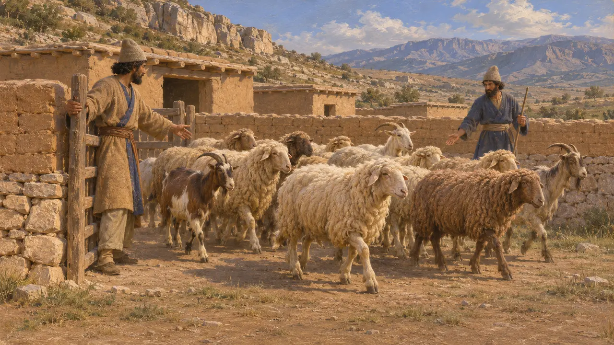
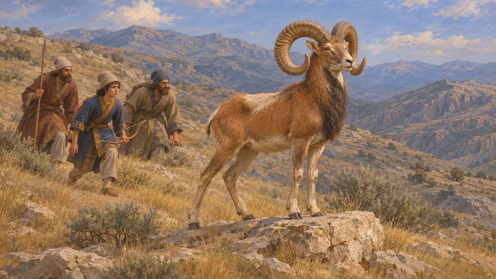
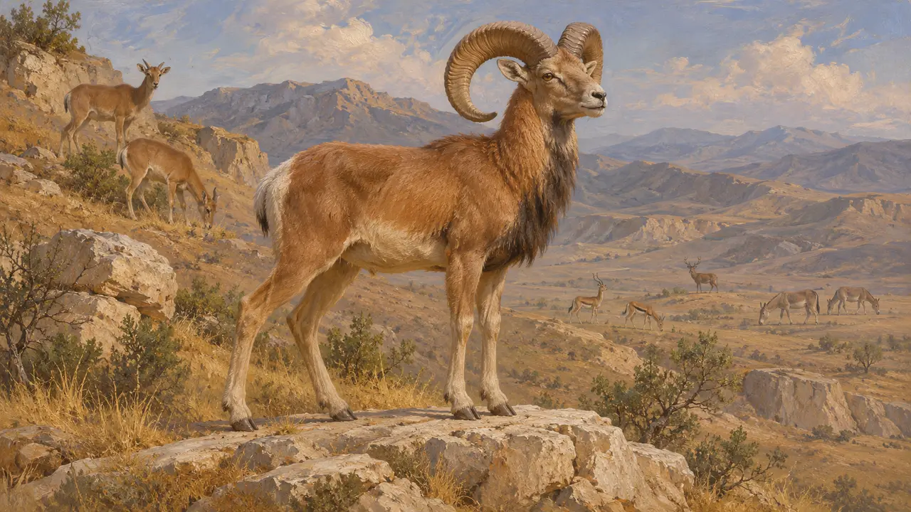
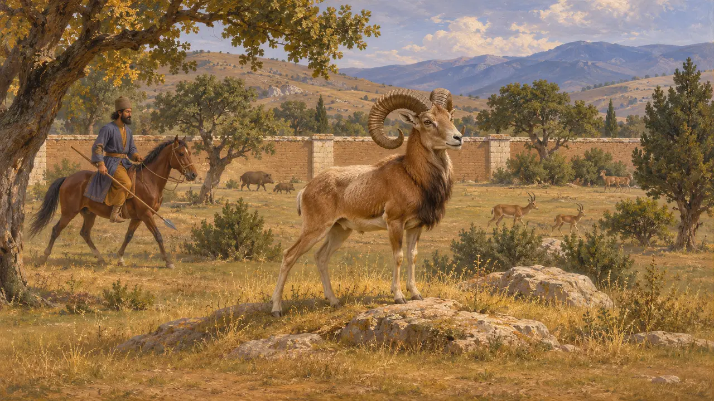

Enzyklopädie › Tierwelt und Wetter

Das Urial
Wildschaf der Berge von Persis und Medien, 559-479 v. Chr.
Im Spiel: Level 1: Das Grab des Gründers, Level 3: Die Lüge, Level 4: Die Terrasse
Das Urial ist ein Wildschaf der trockenen Hügel Irans und Zentralasiens. Die Widder sind rotbraun mit hellen Beinen und tragen große, gebogene Hörner. Die Quellen der Zeit sagen kaum etwas direkt darüber, daher beruht das, was sich sagen lässt, auf Aufzeichnungen über gehaltene Herden, auf griechischen Berichten über die persische Jagd und auf der persischen Gewohnheit, Jagdparks zu unterhalten.
Im Spiel: Das Spiel zeigt den Urial als Kulisse in den Leveln Pasargadae, Bagastana und Parsa, unter den Tieren auf Land, das die Stadt noch nicht erschlossen hat. Keine Regel wertet ihn aus.

Schafe in den persischen Archiven
Zeitgenössisch belegtDie Persepolis-Festungstafeln, die aus der Zeit von etwa 509 v. Chr. bis 493 v. Chr. stammen, verzeichnen Rationen und Vieh, darunter Schafe und Ziegen, die in Persis ausgegeben wurden. Die Tafeln behandeln gehaltene Herden und beschreiben keine Wildtiere. Sie zeigen, wie sehr die Wirtschaft von Persis von Schafen abhing, geben aber keine Auskunft über das Urial.
R. Hallock, Persepolis Fortification Tablets, 1969

Xenophons Jagdszenen
Antiker BerichtXenophon beschreibt im 4. Jahrhundert den jungen Kyros bei der Jagd in Medien mit seinen Verwandten. Das Werk ist zum Teil ein Ideal des Königtums, diese Szenen sind daher kein Bericht über das, was Kyros tat. Sie zeigen aber, dass die Griechen die Jagd als Teil der Erziehung eines persischen Edelmanns ansahen.
Xenophon, Cyropaedia 1.4

Welche Tiere Xenophon nennt
UmstrittenXenophon lässt den jungen Kyros Wildschafe unter Hirschen, Gazellen und Wildeseln jagen (Kyrupädie 1.4.7). Er sagt nicht, um welches Wildschaf es sich handelt; das Urial ist ein Kandidat für Persis und Medien, das Mufflon des Zagros ein weiterer, die Bestimmung ist also eine moderne Vermutung.
Xenophon, Cyropaedia 1.4.7

Jagdparks der persischen Elite
Antiker BerichtXenophon berichtet, dass Kyros der Jüngere bei Kelainai einen Park voller Wildtiere unterhielt, die er zur Übung zu Pferd jagte. Das war im Jahr 401 v. Chr., nach dem Zeitraum des Spiels, doch es zeigt einen Brauch, den griechische Autoren mit persischen Adligen und Satrapen verbanden, deren umhegte Parks sie paradeisoi nannten. Wildschafe wurden vielleicht in den offenen Hügeln rund um solche Orte erlegt, doch die Quellen sagen das nicht.
Xenophon, Anabasis 1.2.7
Quellen
- Xenophon, Cyropaedia 1.4.7
- Xenophon, Anabasis 1.2.7
- R. Hallock, Persepolis Fortification Tablets, 1969
- P. Briant, From Cyrus to Alexander, 2002